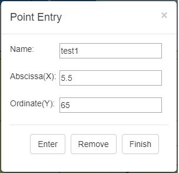

You launch the Point Entry dialog through the File toolbar button.
The dialog has three fields for entering point data. They are:
- Name field
- Abscissa(X) field
- Ordinate(Y) field
At the bottom of the dialog there are three command bottoms. They are:
- Enter button
- Remove button
- Finish button
Command buttons are enabled/disabled based on point data information entered in the name, abscissa and ordinate fields.
Name
|
The name of the curve to be modified by point operation. If the Grapher cannot find a curve with that name, it creates a new curve with that name.
|
Abscissa(X)
|
The X - value of the point that is the subject of point operation.
|
Ordinate(Y)
|
The Y - value of the point that is the subject of point operation.
|
Add
|
Enters the point (X, Y) in the curve identified by the name in the name field.
|
Remove
|
Removes the point (X, Y) in the curve identified by the name in the name field. The remove option is only available for existing curves with at least two points.
|
Finish
|
Closes the dialog.
|
Note:
The Name, Abscissa and Ordinate field entries are validated by the Grapher prior to enabling/disabling the Add and Remove options. Invalid data will result in both the Add and Remove option being disabled.
The Abscissa and Ordinate fields accept numbers or expressions that evaluate to numbers. The expressions may contain Grapher constants such as e and PI or user defined constants.
|
|

|
Created with the Personal Edition of HelpNDoc: Easily create PDF Help documents